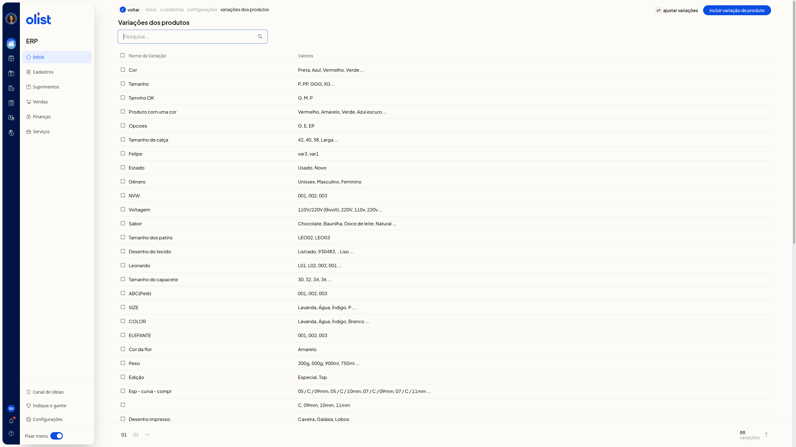
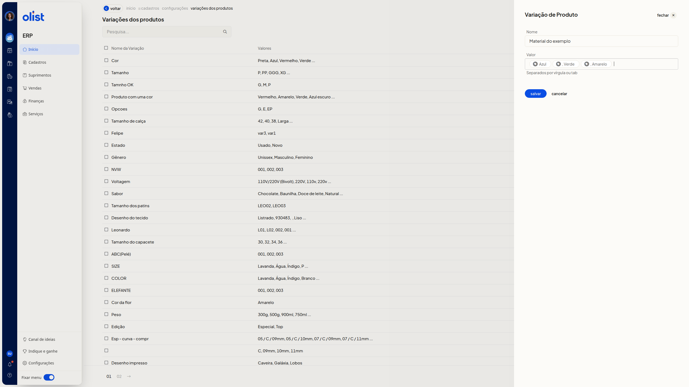
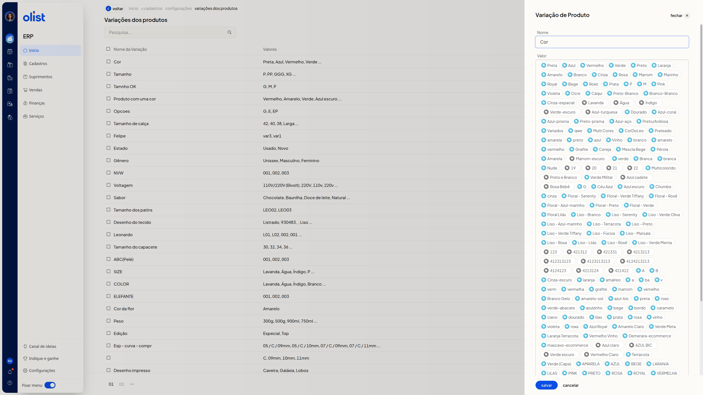

Variações de Produtos - Configurações
A tela Variações dos produtos reúne, no ERP da Olist, as variações já cadastradas. Nela você consulta a lista, inclui uma variação, edita uma existente e move valores de uma variação para outra.
Importante
Valores vinculados a algum produto não podem ser alterados.
Como acessar
Acesse Início > Cadastros > Configurações > Variações dos produtos.
Pré-requisitos
- Estar autenticado no ERP: a página Variações dos produtos abre a lista de variações cadastradas.
Grupos de configuração
Variações dos produtos
A lista reúne as variações cadastradas, a pesquisa e as ações Incluir variação de produto e Ajustar variações.
- Pesquisa...: localiza uma variação na lista. O preenchimento não é obrigatório.
- Nome da Variação: mostra o nome de cada variação. Clique no nome para abrir a edição.
- Valores: mostra os valores da variação. Valores longos aparecem resumidos, seguidos de reticências.
O rodapé informa o total de variações e a paginação.
Clique em Voltar para sair da tela.

Variação de Produto
O painel Variação de Produto serve para incluir uma variação ou editar uma já cadastrada. Os campos Nome e Valor não são obrigatórios.
Incluir uma variação
Clique em Incluir variação de produto.
- Nome: informe o nome da variação.
- Valor: digite os valores separados por vírgula ou tab, conforme o texto Separados por vírgula ou tab. Os valores passam a aparecer separados na tela.
O painel oferece Salvar, Cancelar e fechar. Clique em Salvar para salvar a variação preenchida. Cancelar fecha o painel e volta à lista.

Editar uma variação
Clique no nome da variação, na coluna Nome da Variação.
O painel abre com Nome preenchido e os valores já cadastrados. Leia o aviso Os valores destacados em azul, estão vinculados a algum produto e desta forma, não podem ser alterados.
Para acrescentar valores, use Valor, com o texto Separados por vírgula ou tab.
Salvar, Cancelar e fechar ficam disponíveis. Clique em Salvar para salvar a variação preenchida. Cancelar fecha o painel e volta à lista.

Ajustar variações
Ajustar variações move valores de uma variação para outra. Clique em Ajustar variações.
Os campos abaixo não são obrigatórios.
- Variação Origem: escolha a variação de onde os valores saem. A lista reúne os nomes das variações já cadastradas.
- Variação Destino: escolha a variação que receberá os valores.
- Valores: marque as caixas de seleção dos valores da origem que devem ser movidos.
O painel oferece mover selecionados, Cancelar e fechar. Clique em mover selecionados para mover os valores marcados da origem para o destino. Cancelar fecha o painel e volta à lista.

Excluir variações de produtos
Marque a caixa de seleção da linha da variação. A tela mostra a quantidade selecionada e o botão Excluir variações de produtos, para excluir as linhas selecionadas.
Perguntas frequentes
Por que alguns valores não podem ser alterados?
Os valores destacados em azul estão vinculados a algum produto e não podem ser alterados.
Links relacionados
Se precisar de ajuda com esta tela, fale com o suporte.